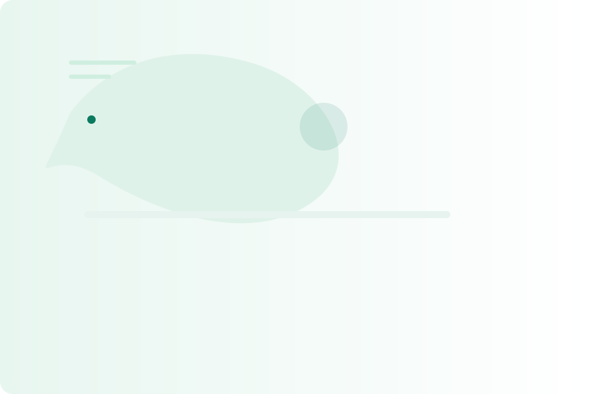

Engineer to Energized
Problem: Irregular sleep and poor recovery. Intervention: 6-week circadian-friendly routine. Outcome: 45 minutes earlier core sleep time and fewer night awakenings reported.
I combine small, evidence-based habit frameworks with human-centered coaching to create sustainable health and resilience. No extremes — just repeatable systems that fit your life.
Free guide: "5 Daily Signals That Predict Sustainable Progress" — delivered when you book a discovery session.

Truth: Short-term tactics often fail without habit scaffolding. We design compact experiments that build repeatable behaviors over weeks, not days.
Truth: Systems and environmental cues double the likelihood of consistent action. We map triggers, micro-actions, and recovery plans.
Truth: Context matters. Our membership adapts based on habits, feedback data, and real-world constraints.
Simple routines designed to be repeated. Each framework has checkpoints and a lightweight tracking method.
Bi-weekly coaching cycles that prioritize problem-solving and adjustment over motivation talks.
We track behaviors that predict outcomes (sleep rhythm, movement consistency, stress buffers) and use them to adjust plans.
Evidence-driven coaching with documented habit adoption and quality-of-life improvements.
Problem: Irregular sleep and poor recovery. Intervention: 6-week circadian-friendly routine. Outcome: 45 minutes earlier core sleep time and fewer night awakenings reported.
Problem: Chronic schedule overload. Intervention: Time-buffer framework and decision triage. Outcome: 3 fewer evening work hours and improved focus during deep tasks.
Problem: Fragmented routine. Intervention: Micro-rest protocol and short anchor rituals. Outcome: Better mood stability and more consistent naps for baby, reducing nighttime stress.
Book a discovery call to receive the free guide and a snapshot habit audit. You’ll leave with one concrete, measurable step you can implement tomorrow.